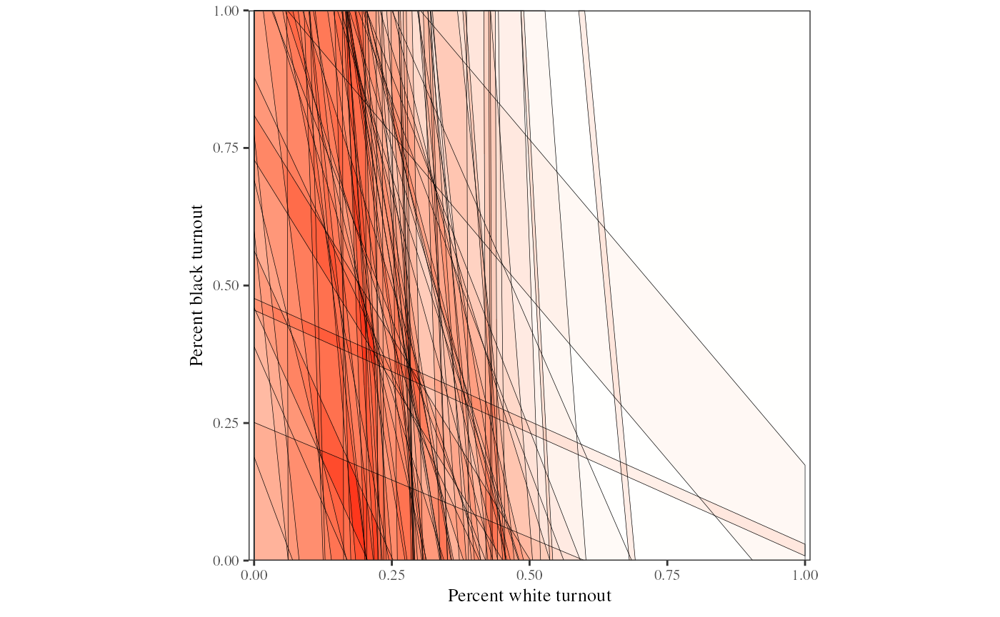
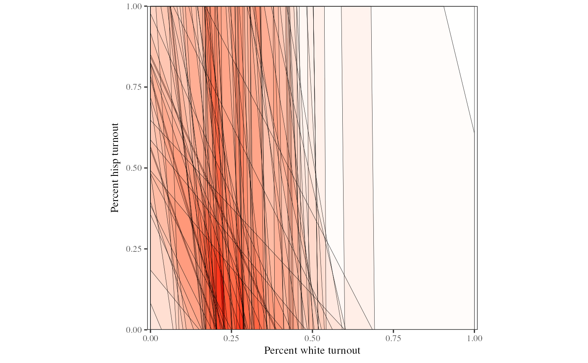
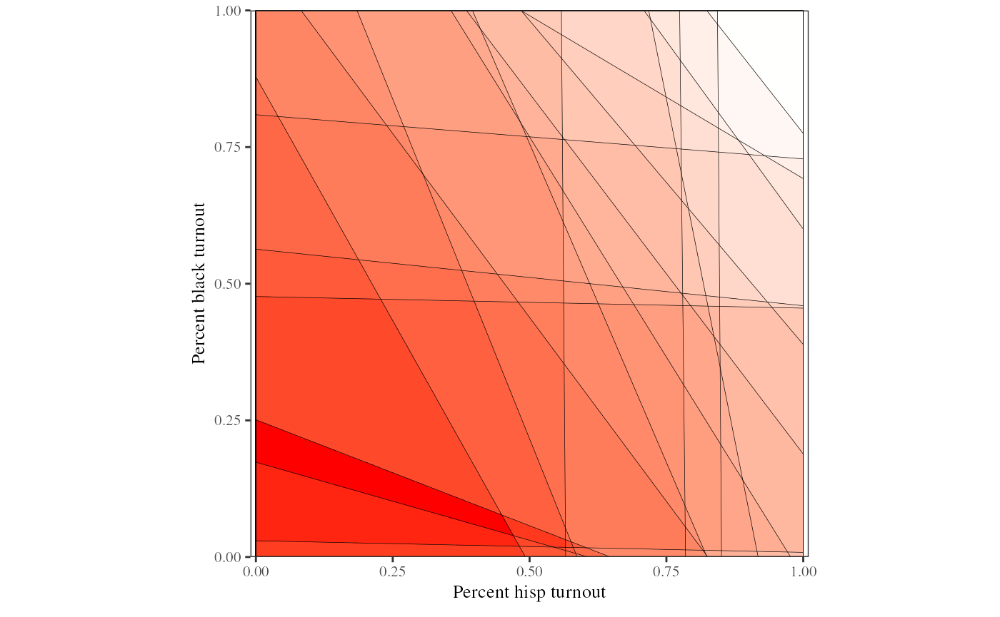

Overview:eiRxC R-commands
Although the 2x2 case is useful in many circumstances, eiR also
allows users to expand beyond the 2x2 case and implement RxC models. To
do this, eiR contains the MCMC implementation of the
multinomial-Dirichlet eiRxC model in Rosen, Jiang, King and Tanner
(2001) “Bayesian and Frequentist Inference for Ecological Inferece: The
RxC Case.” (Statistica Neerlandica, Vol. 55, nr.2, pp 134-156),
and incorporates R code from eiPack (Olivia Lau, Ryan Moore
and Mike Kellermann).
In this section we describe the basic commands needed for eiRxC. Imagine that instead of a 2x2 table where the user aims to infer the proportion of whites and non-whites who turned out to vote, for example, the user instead wants to infer the percent of turnout for white, black, and hispanic. This is a 2x3 table because the resulting estimates from this table will include two estimates (percent turnout and no turnout) for three categories of people (white, black and hispanic).
We use the data RxCdata as a running example.
RxCdata has variables for each of the five marginal
variables for the 2x3 table: turnout is the number of
people in each precinct who turned out to vote, noturnout
is the number of people in each precinct that did not turn out to vote,
white is the number of people who are white in the
precinct, black is the number of people who are black in
the precinct, and hisp is the number of people who are
hispanic in the precinct. Note that, different that the 2x2 case, these
are the numbers of people rather than proportions. The user can include
proportions if they want to, but then must include the argument
total for the the total number of people in the
precinct.
To begin, we load the RxC data from the ei library.
library(ei)
#> Loading required package: eiPack
#>
#> Attaching package: 'ei'
#> The following object is masked from 'package:stats':
#>
#> filter
data(RxCdata)The formula for the eiRxC case tells the program which variables go on each side of the table. In this example, we have turnout and no turnout on one side of the table, and white, black and hispanic on the other side. Therefore, our formula is:
We can call this formula using ei:
dbuf <- ei(formula, data = RxCdata)
#> ℹ Running eiRxC
#> ✔ Running eiRxC [103ms]
#> The MCMC output for the ’s can be found in the data buffer . is a matrix that contains the simulations for each of the ’s for each precinct. Since there are 60 precincts in this dataset and 6 quantities of interest, the number of columns of is . We can analyze the MCMC output by picking out which we are interested at any given time. For example, to look at the MCMC output for the estimated percent white turnout for the third precinct we can use the R code:
out <- dbuf$draws$Beta[, "beta.white.turnout.3"]
summary(out)
#>
#> Iterations = 1:1000
#> Thinning interval = 1
#> Number of chains = 1
#> Sample size per chain = 1000
#>
#> 1. Empirical mean and standard deviation for each variable,
#> plus standard error of the mean:
#>
#> Mean SD Naive SE Time-series SE
#> 0.427945 0.036935 0.001168 0.004039
#>
#> 2. Quantiles for each variable:
#>
#> 2.5% 25% 50% 75% 97.5%
#> 0.3508 0.4049 0.4290 0.4541 0.4917We can also plot this MCMC output to assess convergence:
plot(out)From this output we can get the empirical mean and standard deviation
of each of our quantities of interest. The user can add in extra
arguments to specify the number of simulations, burnin, or priors for
this function. For more information on this, see the documentation for
eiPack and the Rosen et al (2001) paper.
eiRxC Tomography Plots: Assessing Model Dependence
While eiRxC model estimates are helpful, the uncertainty estimates they produce are — like all ecological inference point estimates — conditional on the model assumed. Yet, most of the actual scientific uncertainty in ei models does not stem from the sampling uncertainty given a statistical model, but rather the uncertainty associated with choosing a model — what is known as model dependence (King and Zeng 2006). A tomography plot that contains information about the possible values of the quantities of interest is therefore more useful than the model in understanding the true amount of information in the data from which the model is obtaining its estimates.
While this has not been available in the RxC case before, we have developed a method to creating and displaying tomography plots for 2x3 RxC problems and by extension examine model dependence in any RxC model.
In the 2x3 case, we can do this by using the function
plot_tomogRxC. Following the code above, using the
RxCdata,
formula <- cbind(turnout, noturnout) ~ cbind(white, black, hisp)
plot_tomogRxC(formula, RxCdata)
Each of the polygons on the plot below represent all the possibile values in a given precinct for percent white turnout and percent black turnout. The plot follows what we call the Law of Conservation of Ink, where tomography polygons with more information (smaller polygons) are colored brighter than those with less information (larger polygons). The colors on the plot are a heat map that are brighter when polygons overlap each other. The polygons in this particular district contain a lot of information about the percent white turnout, as the vast majority of the polygons only contain low values of percent white turnout, but they contain very little information about the percent black turnout, as most of the polygons seem to cover the entire range possible for percent black turnout.
The quantity of interest percent hispanic turnout is left out of this tomography plot, since we can only graph two quantities of interest simulataneously. However, if we reorganize the formula, putting white and hispanic first on the right hand side of the formula, we can create another tomography plot that expores the deterministic information for percent white turnout and percent hispanic turnout.
formula <- cbind(turnout, noturnout) ~ cbind(white, hisp, black)
plot_tomogRxC(formula, RxCdata)
#> There are 1 tomography polygons with no information
With this new tomography plot (in Figure 8), we find very similar results to the previous one. While we have quite a bit of information about the percent white turnout, we have less information about percent hispanic turnout. This result derives from the fact that there are very few hispanics and blacks in this particular district.
Last, we can plot the remaining two quantities of interest – percent black turnout and percent hispanic turnout– against each other:
formula <- cbind(turnout, noturnout) ~ cbind(hisp, black, white)
plot_tomogRxC(formula, RxCdata)
#> There are 34 tomography polygons with no information
Here we see that even though the informative polygons indicate low values of percent hispanic and black turnout, we have the least information about the intersection of percent black and hispanic turnout. The polygons are spread all across the unit square space, indicating that the possible values for percent black and hispanic turnout spread over a large area. In the bottom right hand corner, and on the R console, the tomography plot reports how many of the tomography polygons have no information, or how many tomography polygons cover the entire unit square. Here we see that ther are 34 tomography polygons with no information, and since we onlyhave 60 precincts, this means that we have very little information for these quantities of interest. We might be more confident in the estimates for white turnout in this RxC analysis than for black and hispanic turnout.
References
Gary King, A Solution to the Ecological Inference Problem: Reconstructing Individual Behaviour from Aggregate Data, Princeton University Press (1997).
Gary King and Langche Zeng, “The Dangers of Extreme Counterfactuals.” Political Analysis, 14:2, pp 131-159, 2006.
Lau et al, “eiPack: Ecological Inference and Higher-Dimension Dtaa Management.” http://www.olivialau.org/software.
Rosen et al, “Bayesian and Frequentist Inference for Ecological Inference: The RxC Case.” Statistica Neerlandica, 55:2, pp 134-156, 2001.
Useful documentation also avalaible at http://gking.harvard.Edu.
For R language see http://www.r-project.org.
Venables, W.N.,and Ripley, B.D., Statistics and Computing, Springer (2002).